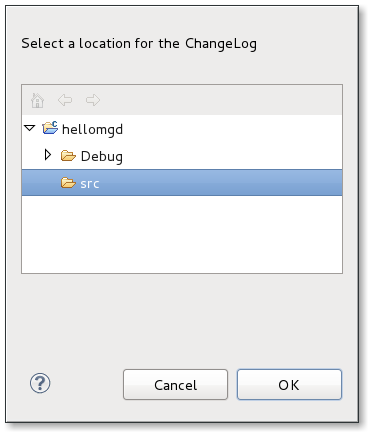
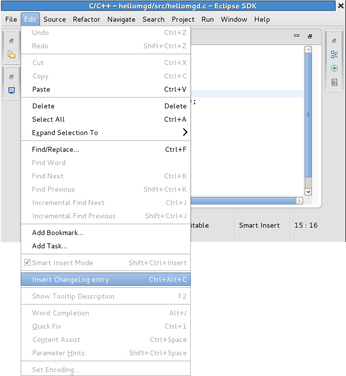
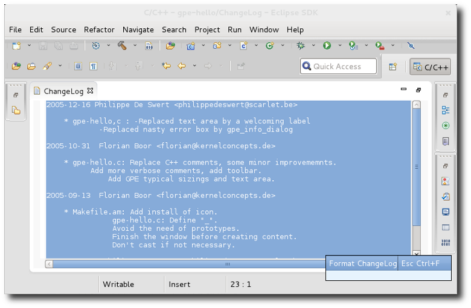
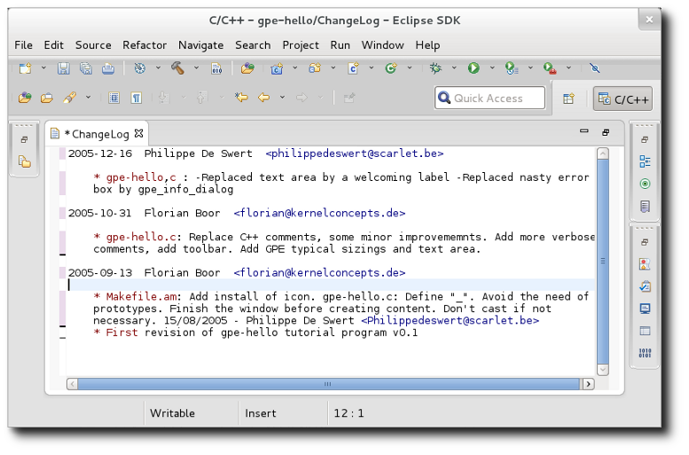

| ChangeLog Plug-in Functions | ||
|---|---|---|
|
|
|
|
| ChangeLog Editor | Updating This Document | |
The ChangeLog plug-in has two functions: Insert ChangeLog and Prepare ChangeLog.
The first time you invoke either function for a specific project, a
Folder Selection
menu will appear. This menu will allow you to select where to save the
ChangeLog file for that project.

After selecting where to save the
ChangeLog file, Eclipse will open it in your workspace editor. The ChangeLog plug-in will then generate an appropriate pre-compiled entry for you to edit further. You can close the
ChangeLog file after saving it; when you invoke the
Insert ChangeLog or
Prepare ChangeLog function again, Eclipse will use the same
ChangeLog file.
The following sections describe both functions in more detail.
This function generates a single ChangeLog entry for the currently selected file in the editor. To use this function, navigate to Edit > ChangeLog Entry. Alternatively, you can also use the key combination
Ctrl+
Alt+
C.

Invoking the Insert ChangeLog function for another file in the same project will create a new ChangeLog entry for the file. If an entry already exists for a file, invoking the Insert ChangeLog function for that file will place the insertion point in the appropriate entry.
This function generates a full ChangeLog entry based on the differences between the local changes you made to a project and its source control repository. As such, using this function requires access to the the source control repository of a project. As of today, Subversion and CVS projects are supported.
The ChangeLog entry generated by the
Prepare ChangeLog function will include new files, removed files, and modifications. To invoke this function, first select the ChangeLog file to which changes should get written to, then navigate to Project > Prepare ChangeLog. Alternatively, you can also use the key combination
Ctrl+
Alt+
p.

This function formats entries in the ChangeLog editor based on the chosen formatting strategy. The formatting strategy is specified in the Window > Preferences > ChangeLog > Formatters list. At present, only the GNU format is shipped with the ChangeLog feature but it is possible to contribute other strategies.
To invoke formatting, select a section of text and either right-click and choose Format ChangeLog or else use the key combination Esc Ctrl+' f'. Note the space after Esc which means you don't hit all three keys at once. Only the last two keys need to be hit together. After pressing Esc you should see a dialog pop-up which has the various key combinations that start in the same manner. You can use your mouse to choose the appropriate one, hit Enter when Format ChangeLog is selected, or continue and type in Ctrl+' f'.

After selection, the file is formatted as follows:

© Copyright Red Hat, Inc. 2009, 2013
© Copyright Phil Muldoon <pkmuldoon@picobot.org> 2006.
This documentation is licensed under the Eclipse Public License v. 1.0.
|
|

|
|
| ChangeLog Editor | Updating This Document |